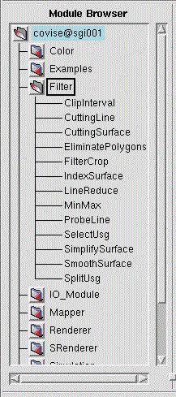

Use the Module
Browser to select the modules for your map.
The Module
Browser of the MapEditor contains a tree for hosts, categories (module
classes) and modules. If COVISE was started in single user mode, only the
name of your local host is in the tree.
|  | 1. Select
your Hostname (if you you have more than one host in the list, but
you don't need remote modules - for details including an example see CSCW)
2. Select the Category
(module class). The available classes are:
3. Select your specific Module from the subtree for the category and 4. Drag the module name to the place in the working area where you want to place the module icon. The module icon appears in the working area, and depending on the module this may have the following side effects:
|
| If you have successfully added a remote computer, an entry for this computer is created in your Module Browser, and you can use the corresponding additional tree to select a remote module; if specified in the the COVISE config file, the module icons get the same color as the hostname, otherwise they get a qualified module name; see also menu option CSCW (where you get an example for such a Module Browser) |
For more information about modules and how to connect them to a map see
(see also Module
Grouping / Quickstart )